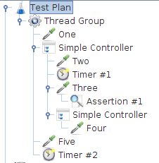
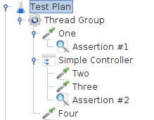

Testy wydajnościowe - JMeter
Tworzenie skryptów i przeprowadzanie testów
Informacje organizacyjne
O mnie
Jestem specjalistką ds. zapewnienia jakości i bezpieczeństwa oprogramowania z doświadczeniem w testach bezpieczeństwa aplikacji webowych oraz infrastruktury, testach wydajnościowych oraz testach technicznych.
Kwestie organizacyjne
- Warsztat jednodniowy w godz. 9:00 - 17:00.
- Jeśli nikt nie ma nic przeciwko, zwracajmy się na "Ty".
- Teoria + zadania praktyczne.
- Co około godziny przerwa 10-15 min oraz dłuższa przerwa lunchowa.
- Pytania zadawajcie na bieżąco.
Agenda
-
Wprowadzenie
-
Podstawy testów wydajnościowych (testy wydajnościowe, przeciążeniowe, obciążeniowe)
-
Tworzenie planu testów
-
Podstawowe elementy testu
-
Hierarchiczna struktura testu
-
Nagrywanie ruchu
Agenda
-
Przechwytywanie ruchu przez lokalne Proxy
-
Zbieranie wyników wydajności
-
Pluginy
-
Logowanie, sesje i cache manager
- Asercje
- Wyrażenia regularne i pobieranie tokenów z żądań HTTP
- Sterowanie wykonaniem skryptu poprzez kontrolery
- Modelowanie zachowania użytkowników poprzez kontrolery
- Parametryzacja testów
- Symulowanie rzeczywistych użytkowników poprzez opóźnienia między żądaniami
- Automatyzacja testów
Wprowadzenie

Kiedy możemy mieć problem z wydajnością?
- Biznes zorganizował promocję,
- Black Friday,
- Rejestracja na przedmioty na studiach,
- Zapisy na szczepienia.
Najpopularniejsze narzędzia do testów wydajnościowych
JMeter - wprowadzenie
- Narzędzie bezpłatne - licencja APACHE LICENSE
- Zaawansowane narzędzie do testów różnego rodzaju serwisów (HTTP, FTP, JDBC, LDAP, SMTP,POP3,IMAP,SOAP/REST Webservices) pod względem wydajności i poprawności zwracanych wyników.
- Program napisany w Javie dzięki czemu może być wykorzystywany na wielu platformach.
- Pozwala na symulowanie dowolnej liczby użytkowników (możliwość rozdzielenia testów na kilka maszyn - Distributed Testing).
- Pierwsza wersja programu została wydana w 1998 roku. Od tego czasu aplikacja jest wydawana na bieżąco.
Zalety
- intuicyjne GUI,
- możliwość gromadzenia różnorodnych statystyk i ich analizy,
- możliwość rozszerzenia o własne komponenty,
- możliwość dodawania asercji pozwala na znajdowanie błędów,
- zastosowanie Javy, Groovy,
- rozbudowana dokumentacja i liczne tutoriale.
Wady
- użycie GUI jak i Javy daje narzut na szybkość działania, przez co wyniki mogą być zaburzone,
- spore wymagania pamięciowe.
Instalacja
- JMeter jest dostępny do pobrania pod adresem https://jmeter.apache.org/download_jmeter.cgi.
- Do prawidłowego działania wymagane jest wcześniejsze zainstalowanie Javy 8 lub 9 (JDK/JRE) i ustawienie zmiennej środowiskowej JAVA_HOME.
- Nie jest konieczna instalacja JMetera, wystarczy rozpakować zip.
- Uruchomienie pliku jmeter.bat (Windows) lub jmeter.sh (Linux).
Program może być uruchamiany w trybie GUI jak i z linii poleceń - jmeter.bat (lub jmeter.sh) znajdujący się w katalogu bin.
Po rozpakowaniu dostępne są następujące katalogi:
- bin - folder zawierający skrypty wykonywalne,
- doc i printable_docs - dokumentacja,
- lib - pliki JAR wykorzystywane przez JMeter,
- lib/ext - pliki JAR z pluginami.
Pliki JAR z pluginami - katalog lib/ext
Instalację dodatków ułatwia Plugin Mnager, aby z niego skorzystać należy pobrać plugins-manager.jar, u mieścić w katalogu lib/ext i zrestarować JMetera.
Tryb GUI
Z trybu GUI korzystamy podczas tworzenia i debugowania skryptów. Testy wydajnościowe uruchamiamy z wykorzystaniem trybu konsolowego.
Tryb konsolowy
jmeter -n -t my_test.jmx -l log.jtlgdzie flagi oznaczają odpowiednio:
- n - wywołanie w trybie non-gui,
- t - nazwa pliku jmx z planem testu,
- l - nazwa pliku jtl do zapisu logów.
Wywołanie z linii poleceń ma postać:
Warto pamiętać
- JMeter to nie przeglądarka, nie wykonuje kodu Java Script, nie renderuje HTML.
- Operujemy na żądaniach i odpowiedziach.
Podział testów wydajnościowych
Software performance testing is used to determine the speed or effectiveness
of a computer, network, software program or device. This process can involve
quantitative tests done in a lab, such as measuring the response time or the number
of MIPS (millions of instructions per second) at which a system functions.
-Wikipedia

Testy wydajnościowe
- Sprawdzają czas odpowiedzi poszczególnych funkcji, zgodność z wymaganiami np. czas odpowiedzi nie więcej niż 3 sekundy.
Testy obciążeniowe
-
Przesyłanie bardzo dużej liczby transakcji przez użytkowników działających w tym samym czasie przez dłuższy czas.
-
Testy określają jak wiele zapytań jest w stanie obsłużyć system w danym przedziale czasu.
Test time
VU
Testy przeciążeniowe
-
Zasymulowanie ponadprzeciętnej liczby użytkowników, działających równolegle, przekroczenie możliwości serwera.
-
Sprawdzenie czy nie doszło do utraty danych, wycieków pamięci, jak zachowuje się system po wystąpieniu przeciążenia.
Test time
VU
Przykładowy podział ze względu na cel testu:
- wydajność podstawowa (Baseline Test),
- wydajność systemu przy zakładanym obciążeniu produkcyjnym (Load Test),
- obciążenie systemu przez dłuższy czas (Soak Test),
- określenie maksymalnego dopuszczalnego obciążenia systemu przez jego zwiększanie, aż do momentu wystąpienia jego awarii (Stress Test),
- wydajności systemu w sytuacji konieczności obsługi dużych wolumenów danych lub operacji (Volume Test).
Przykładowy podział ze względu na cel testu:
- wykrycie tzw. "wąskich gardeł" systemu będących problemami jego wydajności,
- wykrycie tzw. "wąskich gardeł" systemu będących problemami jego wydajności.
Przygotowanie do testu
- Znajomość kontekstu biznesowego aplikacji.
- Znajomość technologii (komunikacja między przeglądarką, a serwerem, load balancer, websocket, CDN).
- Znajomość statystyk dotyczących normalnego obciążenia i maksymalnego obciążenia.
Z czego wynikają problemy z wydajnością?
- Niekompresowane obrazy i pliki wideo.
- Brak wykorzystania CDN.
- Brak cachowania zasobów statycznych.
- Brak ograniczenia liczby wyświetlanych rekordów.
- Problemy po stronie bazy danych:
- Brak indeksów na bazie,
- Brak archiwizacji danych,
- Niewłaściwe użycie operacji wykorzystujących dużo zasobów np. HAVING, GROUP BY
- Limity połączeń do bazy danych.
Na jakie pytania pomagają odpowiedzieć testy wydajnościowe?
- Czy aplikacja będzie nadal działać przy 80 jednocześnie korzystających użytkownikach?
- Jak niezawodny będzie system podczas obciążenia 100 użytkownikami?
- Ile zasobów (RAM, CPU) jest wykorzystywanych przy obciążeniu 200 użytkowników?
- Czy czasy odpowiedzi dla wszystkich komponentów aplikacji są podobne?

Tworzenie planu testów
Plan testów ma strukturę hierarchiczną. W GUI przedstawiany jest jako graf, którego najważniejszymi węzłami są:
- Thread Group - grupa wątków (użytkowników),
- Sampler - element wysyłający zapytania do serwera (FTP Request, HTTP Request, JDBC Request),
Podstawowe elementy testu
- Logic Controller - sterują przebiegiem testu np. If Controller, którego zawartość będzie wykonana gdy warunek jest spełniony, czy Once Only Controller, którego zawartość będzie wykonana tylko w pierwszej iteracji testu,
- Assertion - sprawdzenie poprawności zwracanych danych np. zgodności z wyrażeniem regularnym,
Podstawowe elementy testu
- Configuration Element - zebraniu ustawień konfiguracyjnych np. obsługa plików cookie, czy uwierzytelniania typu HTTP,
- Timers - pozwala opóźnić lub zsynchronizować operacje, ułatwia symulowanie rzeczywistych użytkowników,
Podstawowe elementy testu
- Listeners - zbieranie, wyświetlanie wyników i generowanie statystyk np. View Results Tree, View Results in Table, Dane zagregowane, Summary Report,
- Pre-Processor Elements - pozwalają wykonać akcję przed wykonaniem zapytania np. Sample Timeout, czy parser linków HTML,
Podstawowe elementy testu
- Post-Processor Elements - pozwalają wykonać akcję po wykonaniu zapytania, użyteczne w przypadku pobierania parametrów z odpowiedzi na żądanie.
Podstawowe elementy testu
Najważniejsze elementy JMetera
Thread Group
Samplers
Logic Controller
Listeners
Assertions
Hierarchiczna struktura testu
Hierarchiczna struktura testu

Hierarchiczna struktura testu

Przykład praktyczny - stworzenie prostego testu strony głównej aplikacji
Utworzenie nowej grupy wątków: Plan testów -> Dodaj -> Threads (Users) -> Grupa wątków
Ustawienie liczby wątków oraz czasu w jakim zostaną uruchomione wszystkie wątki.
Ustawienie liczby powtórzeń.
Grupa wątków Threads (Users)
Tworzenie planu testów
Stworzenie listy zadań dla grupy wątków - zadanie w postaci wysłania żądania do strony głównej aplikacji. Potrzebny element wysyłający zapytanie do serwera: Grupa wątków -> Dodaj -> Sampler -> HTTP Request.
Podanie nazwy lub IP serwera, numeru portu oraz ścieżki.
Tworzenie planu testów
Wybranie metody HTTP (np. GET, POST), protokołu (domyślnie http).
Aby zobaczyć wyniki testu np. odpowiedź na żądanie należy dodać jeden ze słuchaczy: Grupa wątków -> HTTP Request -> Dodaj -> Słuchacze -> View Result Tree.
Narzędzia deweloperskie przeglądarki
Uruchomienie narzędzi deweloperskich przez skróty klawiszowe
- Chrome i Firefox: Ctrl + Shift + I
- Internet Explorer i Edge: F12
- Mac: Cmd + Option + I
Firefox - ponowne przeslanie żądania: Sieć -> Edytuj i wyślij ponownie
Nagrywanie ruchu i przechwytywanie przez lokalne Proxy
Narzędzia typu lokalnego Proxy
-
Proxy jest zainstalowane na komputerze testującego.
-
Przeglądarka łączy się z Proxy, a następnie Proxy łączy się z żądaną stroną internetową.
-
Dzięki takiemu połączeniu możliwe jest przechwytywanie oraz zmiana danych wysyłanych pomiędzy przeglądarką, a serwerem.

Nagrywanie skryptu

Instalacja certyfikatu JMeter - Firefox
Podczas importu certyfikatu należy zaznaczyć opcję Trust this CA to identify web sites
Instalacja certyfikatu JMeter - inne przeglądarki
"The Chrome browser picks up the certificate trust store from your host computer. By installing CA certificate in your computer’s built-in browser (e.g. Internet Explorer on Windows, or Safari on OS X), Chrome will automatically make use of the certificate."
Nagrywanie skryptu - wyłączenie przechwytywania CSS i JS
(?i).*\.(bmp|css|js|gif|ico|jpe?g|png|swf|woff|woff2)
Wykorzystanie innych narzędzi typu lokalnego proxy np. Burp Suite
Logowanie, sesje i cache manager
Cookie Manager
-
Dodanie obsługi plików cookie, niezbędne przy aplikacjach wymagających zalogowania: Grupa wątków -> Dodaj -> Element konfigurujący -> HTTP Cookie Manager.
-
Cookie Manager umożliwia dodawanie plików cookie przez użytkownika.
-
Każdy wątek ma swój własny obszar przechowywania plików cookie, co daje możliwość symulowania wielu użytkowników.
-
Jeśli identyfikator byłby przesyłany w adresie URL można skorzystać z HTTP URL Re-writing Modifier.
HTTP Cache Manager
-
Symuluje zachowanie rzeczywistej przeglądarki.
-
Sprawdza tagi Last-Modified oraz Etag.
-
Należy ustawić maksymalną liczbę elementów w cachu, domyślnie 5000
-
Ewentualne problemy związane z cache manager "All resources are cached in RAM so, in the scenario where this parameter is too high, you will easily get an OutOfMemoryException."
HTTP Cache Manager
Jmeter nie pobiera statycznej zawartości, dopóki nie zostanie to specjalnie skonfigurowane. Jeśli zaznaczymy opcję "Retrieve All Embedded Resources", Jmeter pobierze wszystkie pliki statyczne (takie jak HTML, CSS, js, obrazy itp.)
Porównanie czasów odpowiedzi z włączoną opcją cachowania i bez
Źródło: redline13.com/blog/2016/01/jmeter-http-cache-manager/
Ćwiczenie 1
Przygotowanie skryptu do testów wydajnościowych na stronie http://automationpractice.com. Skrypt ma obejmować następujące operacje:
-
Wejście na stronę główną.
-
Przejście do strony logowania.
-
Zalogowanie do aplikacji, do logowania można użyć następującego konta - login: o12557375@nwytg.net hasło: warsztaty%6.
-
Wyświetlenie informacji o koncie - zakładka personal information.
Zbieranie wyników wydajności
Listeners
-
Simple Data Writer - zapisanie wyników testu do pliku w formacie CSV lub XML, możliwość wyboru zapisywanych elementów.
-
Graph Results - wykres czasu odpowiedzi na żądania.
-
View Result Tree - wyświetla treść żądania i zwróconą odpowiedź, czas odpowiedzi, kod odpowiedzi, parsuje różne formaty m.in. HTML, XML, PDF.
Listeners
-
Aggregate Report - tabela statystyk dla każdego wysłanego żądania.
-
View Results in Table - tabela wyników dla każdej próbki, jeden wiersz odpowiada jednej próbce.
-
Summary Report - podobny do Aggregate Report.
Simple Data Writer
-
Zapisanie wyników testu do pliku.
-
Możliwe formaty to XML lub CSV, zapis do CSV jest bardziej efektywnym rozwiązaniem, ale jest mniej szczegółowy niż XML.
-
Ścieżkę do pliku można podać albo jako ścieżkę bezwzględną albo ścieżkę względną. Ścieżka względna odnosi się do aktualnego katalogu, domyślnie “bin/”. Jeśli ścieżka zaczyna się od “~/” odnosi się do katalogu w którym został zapisany plan testów (plik JMX).
Simple Data Writer
Możliwość wybrania elementów do zapisu. Dane takie jak pliki cookie, metoda i zapytanie zapisywane są jako część opcji "Sampler Data".
Graph Result
-
Generuje prosty wykres czasu dla wszystkich żądań (sample times).
-
Czas reprezentowany w milisekundach.
-
Punkty na wykresie odpowiadają:
-
czarny - czas odpowiedzi dla próby,
-
czerwony - aktualne odchylenie standardowe,
-
zielony - aktualna przepustowość.
-
Graph Result
-
Nie powinien być wykorzystywany podczas właściwego testu ponieważ zużywa dużo pamięci i CPU, raczej podczas testu funkcjonalnego czy etapu debugowania planu testu.
Graph Result
Przepustowość odpowiada liczbie obsłużonych żądań na minutę.
Obejmuje opóźnienia dodane do planu testów, zgodnie z dokumentacją “This calculation includes any delays you added to your test and JMeter's own internal processing time. The advantage of doing the calculation like this is that this number represents something real - your server in fact handled that many requests per minute, and you can increase the number of threads and/or decrease the delays to discover your server's maximum throughput”.
Throughput = (number of requests) / (total time)
Graph Result
Data - plot the actual data values, Average - plot the Average, Median - plot the Median (midway value), Deviation - plot the Standard Deviation (a measure of the variation), Throughput - plot the number of samples per unit of time
View Result Tree
-
Wyświetla treść żądania i zwróconą odpowiedź, czas odpowiedzi i kod odpowiedzi.
-
Parsuje różne formaty m.in. HTML, XML, PDF.
-
Posiada funkcję wyszukiwania w treści odpowiedzi.
-
Umożliwia przeszukiwanie odpowiedzi wyrażeniem regularnym i znalezienie dopasowanego do niego tekstu.
View Result Tree
Aggregate Report
-
Tabela statystyk dla każdego żądania o danej etykiecie.
-
Kolumny w generowanej tabeli odpowiadają:
-
Label - The label of the sample,
-
# Samples - The number of samples with the same label,
-
Average - The average time of a set of results,
-
Aggregate Report
- Median - The median is the time in the middle of a set of results. 50% of the samples took no more than this time; the remainder took at least as long,
- 90% Line - 90% of the samples took no more than this time. The remaining samples took at least as long as this (90th percentile),
- 95% Line - 95% of the samples took no more than this time. The remaining samples took at least as long as this (95th percentile),
Aggregate Report
- 99% Line - 99% of the samples took no more than this time. The remaining samples took at least as long as this (99th percentile),
- Min - The shortest time for the samples with the same label,
- Max - The longest time for the samples with the same label,
- Error % - Percent of requests with errors,
Aggregate Report
- Throughput - the Throughput is measured in requests per second/minute/hour. The time unit is chosen so that the displayed rate is at least 1.0. When the throughput is saved to a CSV file, it is expressed in requests/second, i.e. 30.0 requests/minute is saved as 0.5,
- Received KB/sec - The throughput measured in received Kilobytes per second,
Aggregate Report
- Sent KB/sec - The throughput measured in sent Kilobytes per second,
- 95% Line - 95% of the samples took no more than this time. The remaining samples took at least as long as this (95th percentile),
Aggregate Report
View Results in Table
-
Tabela wyników dla każdej próbki (żądania).
-
Wyniki dla każdego żądania w nowym wierszu.
-
Typ zbierania wyników obciążający pamięć.
Summary Report
-
Tabela statystyk dla każdego żądania o danej etykiecie.
-
Zbliżony do Aggregate Report, ale mniej obciążający pamięć, przez co bardziej zalecany do zbierania wyników.
-
Kolumny Etykieta, Liczba próbek, Średnia, Min, Max, Odchylenie standardowe, % błędów, przepustowość, KB/sek, Sent KB/sec, bitów średnio.
Active Threads Over Time
Pluginy
HTTP Request -> Add -> Listener -> jp@gc - Active Threads Over Time
Test Plan -> Add -> Threads (Users) -> jp@gc - Ultimate Thread Group
Dummy Sampler
- Symuluje wysłanie żądania do serwera bez rzeczywistego generowania ruchu.
- Do debugowania skryptu, testowania asercji, post processorów, skryptów.
- Jeden z 10 najczęściej wykorzystywanych pluginów.
Ćwiczenie 2
Do przygotowanego wcześniej skryptu dodanie słuchaczy np.:
-
View Result Tree
-
Aggregate Report
-
View Results in Table
Instalacja pluginu - 3 Basic Graphs i dodanie jp@gc - Active Threads Over Time.
Asercje
Asercje
-
Sprawdzenie czy otrzymujemy oczekiwaną odpowiedź przez dodanie asercji: Grupa wątków -> Dodaj -> Assertions -> Response Assertion/HTML Assertion.
-
HTML Assertion - sprawdza składnię zwróconego HTMLa.
-
Wynik asercji jest widoczny np. w drzewie wyników.
-
Asercje mogą sprawdzać takie formaty jak XML, JSON, HTTP.
Asercje
-
Response Assertion - możliwość sprawdzenia m. in. tekstu odpowiedzi, kodu odpowiedzi, nagłówków odpowiedzi. Często spotykane kody odpowiedzi:
-
404: Server error,
-
200: Server OK,
-
302: Web server redirect to other page.
-
Asercje
Dodanie asercji to dodatkowe obciążenie, zużycie pamięci i CPU. Response Assertion i Duration Assertion wiążą się z mniejszym obciążeniem, najbardziej obciążające są asercje bazujące na XML - Compare Assertion i XPath Assertion.
Compare Assertion must not be used during load test as it consumes a lot of resources (memory and CPU)
Asercje
Asercje - Response Assertion
-
Contains - true if the text contains the regular expression pattern,
-
Matches - true if the whole text matches the regular expression pattern,
-
Equals - true if the whole text equals the pattern string (case-sensitive),
-
Substring - true if the text contains the pattern string (case-sensitive).
Poziomy asercji
Poziomy asercji

Ćwiczenie 3
Do przygotowanego wcześniej skryptu dodanie asercji np.:
-
Response Assertion - Response Code
-
Response Assertion - Response Message
-
Response Assertion - Response Headers
Wyrażenia regularne
Wyrażenia regularne (ang. regular expressions, w skrócie regex lub regexp)
Wzorce, które opisują łańcuchy symboli. Pozwalają w łatwy sposób opisywać wzorce tekstu, natomiast istniejące algorytmy w efektywny sposób określają, czy podany ciąg znaków pasuje do wzorca lub wyszukują w tekście wystąpienia wzorca.

Żródło: https://xkcd.com/208/
Wyrażenia regularne
Ze zwracanej odpowiedzi można pobierać jej fragmenty, co jest szczególnie przydatne w przypadku dodatkowych tokenów zwracanych np. w polach input typu hidden.
Odpowiedni fragment odpowiedzi wyszukuje się za pomocą wyrażenia regularnego.
^ |
Początek linii |
$ |
Koniec linii |
. |
Dowolny znak |
\s |
Białe znaki |
\S |
Dowolny znak nie będący białym znakiem |
* |
Zero lub więcej wystąpień |
*? |
Zero lub więcej wystąpień (wersja niezachłanna) |
+ |
Jedno lub więcej wystąpień |
+? |
Jedno lub więcej wystąpień (wersja niezachłanna) |
[aeiou] |
Jeden znak spośród zbioru znaków |
[^ XYZ] |
Jeden znak spoza zbioru znaków |
[a-z0-9] |
Zestaw znaków może zawierać zakres |
( |
Dopasowanie wyrażenia w nawiasie jako grupy (początek grupy) |
) |
Dopasowanie wyrażenia w nawiasie jako grupy (koniec grupy) |
Grupowanie umożliwia tworzenie dłuższych wyrażeń regularnych dla których mogą być zwracane tylko interesujące nas fragmenty.
Większość znaków może być używana jako literały. Istnieją jednak znaki specjalne, które muszą być poprzedzone ukośnikiem \, aby można było ich używać jako literałów. Wspomniane znaki specjalne to: \ . ^ $ ? + * { } [ ] |
Domyślnie kwantyfikatory są zachłanne, tzn. starają się dopasować maksymalną możliwą ilość znaków w tekście. Niezachłanne - dodanie ?
Załóżmy, że mamy następujący fragment strony
name="file" value="readme.txt">name="file" value="(.+?)">i chcemy pobrać nazwę pliku readme.txt. Odpowiednie wyrażenie regularne ma postać:
Wyrażenia regularne
-
Przygotowując wyrażenie regularne warto korzystać z funkcji RegExp Tester w Listener View Results Tree.
-
Przykład - wyszukanie wszystkich linków na stronie głównej. Odpowiednie wyrażenie regularne ma postać:
a href="http:\/\/([^"]+)".Przygotowywanie wyrażeń regularnych - https://regex101.com/
Regular Expression Extractor
-
Match No. - określa które znalezione dopasowanie zostanie zwrócone, możliwe wartości to np. 0 dla losowego, -1 dla wszystkich,
-
Template - odnosi się do grupy w wyrażeniu regularnym, $1$ to grupa 1, $2$ to grupa druga.
Ćwiczenie 4
Rozbudowanie przygotowanego wcześniej skryptu o następujące operacje:
-
Wyświetlenie szczegółów produktu
-
Dodanie produktu do koszyka
-
Wyświetlenie zawartości koszyka
Aby dodać produkt do koszyka należy przesłać poprawny token pobrany ze strony ze szczegółami produktu (wyrażenia regularne). Na stronie z zawartością koszyka należy sprawdzić, czy kwota do zapłaty jest poprawna (asercje).
Timestamp
Dodanie timestampu do żądania:
${__time()}
Z zapisaniem do zmiennej:
${__time(,curTime)}Random Variable

PreProcessor

Przykład zastosowania - dodanie GUID (identyfikator globalnie unikatowy)
Timer
Timer
-
Domyślnie wątki JMetera wysyłają żądania w zadeklarowanej kolejności bez przerw pomiędzy żądaniami. Symulując zachowanie rzeczywistych użytkowników warto wprowadzić opóźnienie pomiędzy kolejnymi żądaniami.
Timer
-
Zgodnie z dokumentacją każdy Timer wykonuje się przed żądaniem w zakresie którego się znajduje.
-
Timery są wykonywane jedynie w połączeniu z żądaniami (samplerami).
-
Aby Timer odnosił się tylko do jednego żądania należy dodać go jako dziecko odpowiedniego węzła.
Dostępne rodzaje Timerów
Constant Timer
Uniform Random Timer
Gaussian Random Timer
Poisson Random Timer
Constant Throughput Timer
Synchronizing Timer
BeanShell Timer
BSF Timer
SR223 Timer
Timer A - applicable to Sampler A only
Timer B - applicable to Sampler A and Sampler B
Timer C - applicable to Sampler A, Sampler B and Sampler C
The Timers are executed before the sampler’s execution
The Timer execution time is not added to the sampler execution time
Źródło: blazemeter.com/blog/comprehensive-guide-using-jmeter-timers
Constant Timer
-
Ustawienie stałych odstępów pomiędzy żądaniami - Thread Delay (in milliseconds).
-
Odstępy pomiędzy żądaniami nie muszą być stałe - mogą być wartością losową z pewnego przedziału lub zmienną zadeklarowaną wcześniej w skrypcie.
-
Funkcja ${__Random(0,10)} zwraca losową wartość z podanego przedziału, tutaj jest to losowa wartość z przedziału 0 - 10.
Wykorzystanie funkcji
Wykorzystanie zmiennej
Gaussian Random Timer
Zmienność wokół stałej przesunięcia (Constant Delay Offset) ma rozkład Gaussa.
Uniform Random Timer
Opóźnienie o losową wartość, gdzie każda z wartości ma to samo prawdopodobieństwo wystąpienia.
Synchronizing Timer
Odpowiada za jednoczesne uruchomienie wybranej liczby wątków powodując duże obciążenie w jednym momencie. Blokuje wątki dopóki X wątków nie zostanie zablokowanych. Następnie są one uruchamiane jednocześnie.
Ćwiczenie 5
Do przygotowanego wcześniej skryptu dodanie odstępów między żądaniami symulujących rzeczywistego użytkownika. Porównanie czasu trwania testu z i bez odstępów.
Czy czasy odpowiedzi były podobne z i bez odstępów?
Uruchomienie z linii poleceń i raportowanie
Raport HTML
JMeter umożliwia generowanie raportu HTML podczas testów wykonywanych z linii poleceń. Raport zawiera liczne wykresy i statystyki.
Tryb konsolowy
Wywołanie z linii poleceń ma postać:
gdzie flagi oznaczają odpowiednio:
-
n - wywołanie w trybie non-gui,
-
t - nazwa pliku jmx z planem testu,
-
l - nazwa pliku jtl do zapisu logów.
-
e - raport generowany po teście wydajnościowym.
-
o - ścieżka do pliku z raportem.
jmeter -n -t test.jmx -l log_test.jtl -e -o C:\Users\test\Documents\apache-jmeter-5.0\bin\reportAPDEX
The Apdex (Application Performance Index) formula is the number of satisfied samples plus half of the tolerating samples plus none of the frustrated samples, divided by all the samples.
| liczba żądań | czas odpowiedzi |
|---|---|
| 60 | poniżej 3s |
| 30 | 3 - 12s |
| 10 | powyżej 12s |
Wymaganie na czas odpowiedzi poniżej 3s, czas tolerowany przyjmuje się jako 4*3s = 12s
Ćwiczenie 6
Uruchomienie przygotowanego wcześniej skryptu z poziomu linii poleceń i wygenerowanie raportu HTML. Analiza raportu i porównanie wykresów z wykresami w GUI.
Distributed Testing - Testy z wykorzystaniem kilku maszyn
Distributed Testing
Podczas testów wykorzystywane są maszyny, które mogą pełnić dwa rodzaje funkcji: master i slave.
Master - kontroluje wykonywanie testu, jest to jedna maszyna, która komunikuje się z pozostałymi maszynami i kontroluje wykonywanie przez nie testów. Maszyna ta sama nie generuje ruchu.
Slave -system na którym wykonywany jest skrypt jmeter-server, maszyna generująca ruch i obciążająca testowany serwer.
Distributed Testing - Wymagania
- Wyłączony firewall,
- Wszystkie maszyny znajdują się w tej samej podsieci (IP 192.x.x.x lub 10.x.x.x),
- Przepływy (dostęp sieciowy) między maszynami,
- Ta sama wersja JMetera na wszystkich maszynach.
Więcej informacji - https://jmeter.apache.org/usermanual/jmeter_distributed_testing_step_by_step.pdf
Distributed Testing
Certyfikat
Przed rozpoczęciem testu należy wygenerować certyfikaty i umieścić je w folderze bin na każdej z maszyn wykorzystywanych podczas testów.
Certyfikaty należy wygenerować za pomocą skryptu bin\create-rmi-keystore.bat.
Distributed Testing
-
Na maszynie Master w pliku jmeter.properties podać adresy IP maszyn Slave.
-
Na każdej z maszyn Slave uruchomić skrypt jmeter-server.
-
Na maszynie Master uruchomić JMeter w trybie graficznym za pomocą pliku jmeter.bat, a następnie z menu wybrać Run -> Remote Start lub Remote Start All.
Distributed Testing - Tryb konsolowy
Wywołanie z linii poleceń ma postać:
Więcej informacji: https://jmeter.apache.org/usermanual/remote-test.html
jmeter -n -t script.jmx -R server1,server2,…Monitorowanie zużycia zasobów
PerfMon - Server
Aby zainstalować wtyczkę PerfMon Server Agent należy np. poprzez pulpit zdalny połączyć się z serwerem, a następnie pobrać plik zip z wtyczką (http://jmeter-plugins.org/wiki/PerfMonAgent/), rozpakować i uruchomić plik ServerAgent.
PerfMon - JMeter
Po stronie stacji testowej i JMetera należy zainstalować plugin PerfMon (Servers Performance Monitoring).
PerfMon

Dodatkowe informacje
Skrypty Groovy
Skrypty Groovy
Skrypty python w JSR223 Sampler
Pobranie jypthon standalone i dodanie do katalogu /lib
Instalowanie dodatkowych pakietów Python
Pobranie przykładowej biblioteki xlrd:
- java -jar jython-standalone-2.7.2.jar -m ensurepip
- java -jar jython-standalone-2.7.2.jar -m pip install xlrd
Zwiększenie zasobów przydzielonej pamięci
Aby zwiększyć maksymalny rozmiar stosu należy znaleźć następującą linię w skrypcie startowym JMetera: HEAP="-Xms1g -Xmx1g" i zmienić odpowiednio wartość –Xmx, np. po zmianie na 4GB linia będzie miała postać HEAP="-Xms1g -Xmx4096m".
Ultimate Thread Group |
Wskazówki dotyczące wydajności
- Cachowanie zasobów zewnętrznych takich jak pliki js, css, images, favicon, font
- Gdzie możliwe jest cachowanie, należy je stosować.
- Ze względów bezpieczeństwa nie mogą być cachowane odpowiedzi zawierające dane wrażliwe.
- Żądania pobrania ogólnodostępnych plików css, js, elementów graficznych strony nie powinny być przesyłane z plikami cookie.
-
Tam gdzie to możliwe pobieranie zasobów z CDN (Content Delivery Network).
-
Kompresja plików z wykorzystaniem gzip.
- Zmniejszenie rozmiaru plików JavaScript i CSS poprzez usuwanie niepotrzebnych znaków z kodu w celu zmniejszenia jej rozmiaru, poprawiając tym samym czas ładowania, usuwanie komentarzy a także niepotrzebnych białych znaków (spacja, znak nowej linii i tabulator).
- Skalowanie obrazów umieszczanych w HTML - przesyłanie odpowiednio zmniejszonych obrazów.
- Umieszczanie skryptów JavaScript na końcu strony, aby nie blokować renderowania strony.
Ćwiczenie 7
Wykorzystanie pythona w JMeterze:
- Pobranie jython-standalone - https://www.jython.org/download.html
- Dodanie do katalogu /lib
- Restart JMetera
- Dodanie elementu Sampler -> JSR223 Sampler
Funkcje
${__functionName(var1,var2,var3)}
Using the Function Helper, you can select a function from the pull down, and assign values for its arguments. The left column in the table provides a brief description of the argument, and the right column is where you write in the value for that argument. Different functions take different arguments.
Inne narzędzia do testów wydajnościowych
Locust
- Skrypty wydajnościowe są pisane w Pythonie
- Pozwala zasymulować obciążenie znacznie większa liczbą użytkowników niż JMeter (inne podejście do obciążenia), dostępna również opcja obciążenia z wielu maszyn (load tests distributed over multiple machines)
- Aktualne wyniki testu widoczne w interfejsie webowym.
- Licencja MIT.
Wydajność Locust vs JMeter

Locust